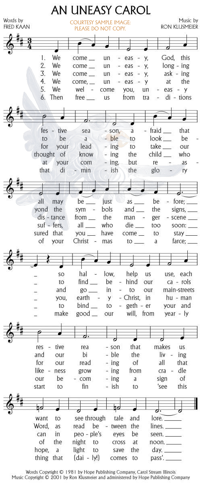

|
|
176聖誕真意 |
|
We come uneasy, God, this festive season, |
|
|
https://musiklus.com/product/an-uneasy-carol/  |
|
|
|
|

176聖誕真意
| Short Name: | Fred Kaan |
| Full Name: | Kaan, Fred, 1929-2009 |
| Birth Year: | 1929 |
| Death Year: | 2009 |

Hymn writer. His hymns include both original work and translations. He sought to address issues of peace and justice. He was born in Haarlem in the Netherlands in July 1929. He was baptised in St Bavo Cathedral but his family did not attend church regularly. He lived through the Nazi occupation, saw three of his grandparents die of starvation, and witnessed his parents deep involvement in the resistance movement. They took in a number of refugees. He became a pacifist and began attending church in his teens.
Having become interested in British Congregationalism (later to become the United Reformed Church) through a friendship, he was attended Western College in Bristol. He was ordained in 1955 at the Windsor Road Congregational Church in Barry, Glamorgan.
In 1963 he was called to be minister of the Pilgrim Church in Plymouth. It was in this congregation that he began to write hymns. The first edition of Pilgrim Praise was published in 1968, going into second and third editions in 1972 and 1975. He continued writing many more hymns throughout his life.
Dianne Shapiro, from obituary written by Keith Forecast in Independent (http://www.independent.co.uk/news/obituaries/fred-kaan-minister-and-celebrated-hymn-writer-1809481.html)
| Short Name: | Ron Klusmeier |
| Full Name: | Klusmeier, Ron |
Ron Klusmeier
As a composer, Ron collaborates with authors Walter Farquharson (Canada), Ruth Duck (U.S.A.), Fred Kaan (England), Brian Wren (U.S.A.), Shirley Erena Murray (New Zealand), Sheelah Megill (Canada), Lorne Robson (Canada), and John Oldham (Canada). He has hundreds of selections published by over 75 denominations and publishing companies worldwide.
Voices United, hymn book of the United Church of Canada, contains more hymn tune compositions by Ron than by any other contributor. More Voices, the recent supplement to Voices United, includes yet more of Ron's hymn tunes. In addition, his compositions are featured in the new Anglican, Presbyterian, Lutheran, and Roman Catholic hymn-books in Canada as well as many denominational hymn-books in the U.S.
Ron served the Head Office of the United Church of Canada as National Music Ambassador and simultaneously directed music programmes in two Mississauga, Ontario churches; one United and one Roman Catholic. He has also served as Minister of Music at St. David's United Church (Calgary, Alberta); Glebe-St. James United Church (Ottawa, Ontario); Central Presbyterian Church (Cambridge, Ontario), and Knox United Church (Parksville, BC). For three years he did freelance work based at the Naramata Centre for Continuing Education in British Columbia. In the United States he has directed congregational music programmes for United Church of Christ, United Methodist, Lutheran, and Roman Catholic churches.
Ron has provided freelance broadcast services as musician, writer, composer, and worship leader for the Religious Department of CBC Television, Prairie Regional Broadcasting Service and Alberta Interfaith. He was retained as contract consultant for Religious Music and Arts for three years by the Alberta Government Department of Cultural Affairs.
In 1978 he was selected by the Government of Canada as "Outstanding Young Man of the Year." That same year he composed the 1978 World Day of Prayer theme hymn. He composed the music for the cantata, "God's Gentle Gift" (1993 United Church Television Network Christmas Special on VISION-TV; words by Walter Farquharson). In 1994 he produced the National Tour for the musical, "For Nineveh's Sake!" based on the Old Testament story of Jonah (words by Walter Farquharson, music by Ron Klusmeier).
"Walls That Divide" with music by Ron and words by Walter Farquharson was created as a theme hymn for the 1975 Assembly of the World Council of Churches in Nairobi, Kenya. Ron's hymn, "Praise to the Lord," was chosen to represent the people from North America at the Recommitment Service of the 50th anniversary meeting of the World Council of Churches in Harare, Zimbabwe, December, 1998.
In 1999 Ron completed the music for "Stay With Us," a new Easter Cantata with words by Walter Farquharson (commissioned by Knox United Church Choir, Parksville, BC and premiered in Comox and Parksville for Easter 1999; directed by the composer and narrated by the author). In 1999 he released two new original recordings: HYMNS FOR MINNIE solo piano improvisations based on popular hymn tunes; and CATHEDRAL GROVE/Island Inspirations solo piano improvisations inspired by the beauty, wonder, and people of Vancouver Island.
In September and October of 2000 Ron produced "NOEL from Vancouver Island." This ecumenical music project, produced as a co-operative effort by Canadian West Coast families of faith, brought together over 200 singers and musicians (representing 22 churches from Central Vancouver Island and Gabriola Island) to record 14 Christmas carols for which Ron specially created the choral and instrumental arrangements. A sequel, "Noel 2--Each Has the Face of Bethlehem Child", was released in November 2001.
HYMNS FOR HEINZ, a 2002 recording, is a tribute to Ron's dad who died in 2000. This solo piano CD consists of improvisations based on some of Heinz's favourite hymn tunes. Ron's solo piano recording, HYMNS WITH WALTER (released in January 2006), celebrates the long relationship with author Very Rev. Dr. Walter Farquharson. It features some of the many melodies which have been inspired by Walter's texts.
At the May 4, 2002 Convocation of St. Andrew's College, Saskatoon, Ron was the recipient of an Honourary Doctor of Divinity Degree in recognition of his ministry and contributions to the worship life of the church.
In February 2008, Ron was nominated to be the 40th moderator of the United Church of Canada by Comox-Nanaimo Presbytery in British Columbia. Following a time of deep discernment, Ron made the difficult decision in December 2008 to withdraw his nomination. From Ron: "Being nominated as a candidate for the highest elected office in the United Church of Canada was an overwhelming honour. Because the position is full-time and involves significant travel, one of the unknowns I had to address was the impact the three year commitment of serving as Moderator would have on the creative part of my calling. I would have dearly loved offering spiritual leadership to the church had I been elected. However, it was important to face the reality that choices needed to be made about how I would spend my time over the next three years and I could not imagine putting at risk the time for writing and composing which has been such an important part of my ministry. I do hope the time will come when an artist will become the Moderator as the church does the hard work of discovering its relevance and role in the 21st century."
In 2012, Ron travelled to Ethiopia on a study tour with the Canadian Foodgrains Bank. This trip served as preparation for a 10-month cross-Canada concert tour which started in August, 2012. This "Tour of a Lifetime" benefitted both CFGB and the United Church Observer (the monthly magazine of the United Church of Canada). Upon completion of the tour, Ron will be resuming his writing and recording from his rural Vancouver Island home.